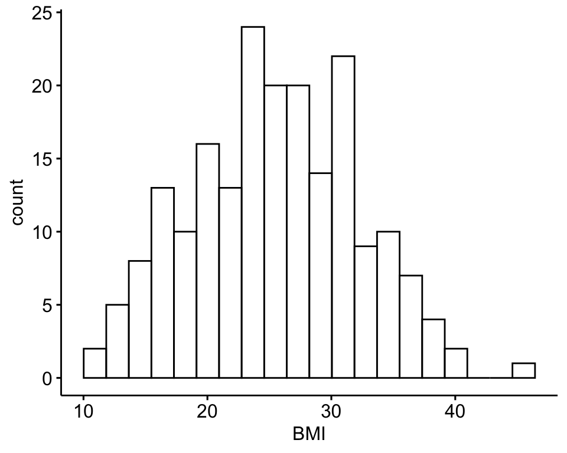
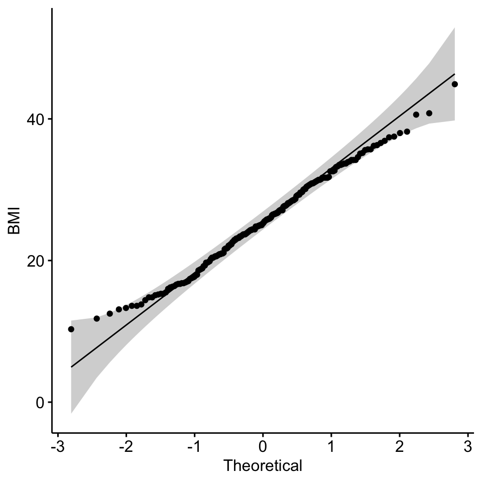
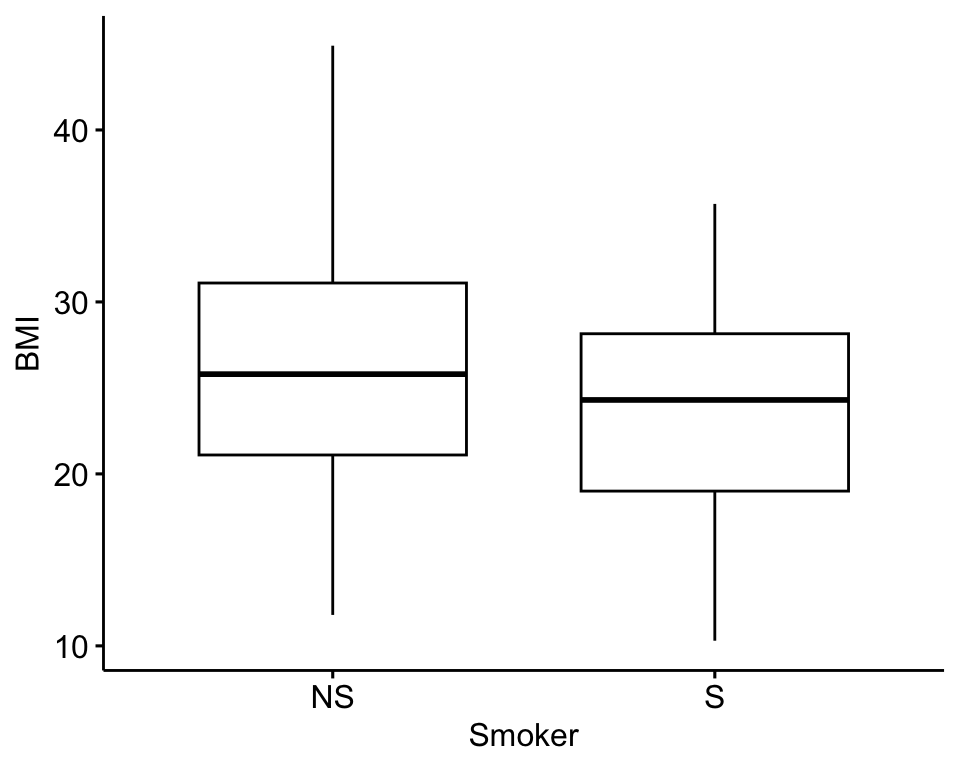
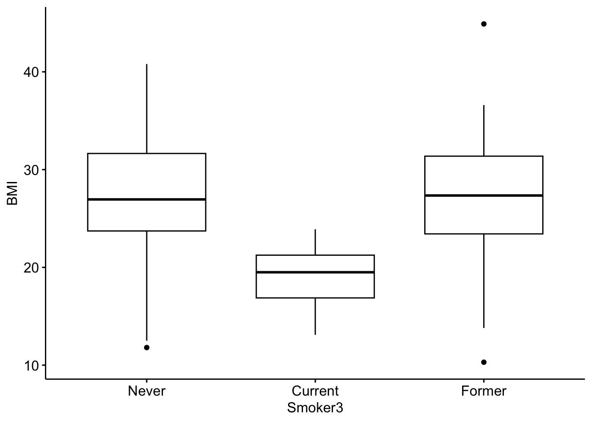
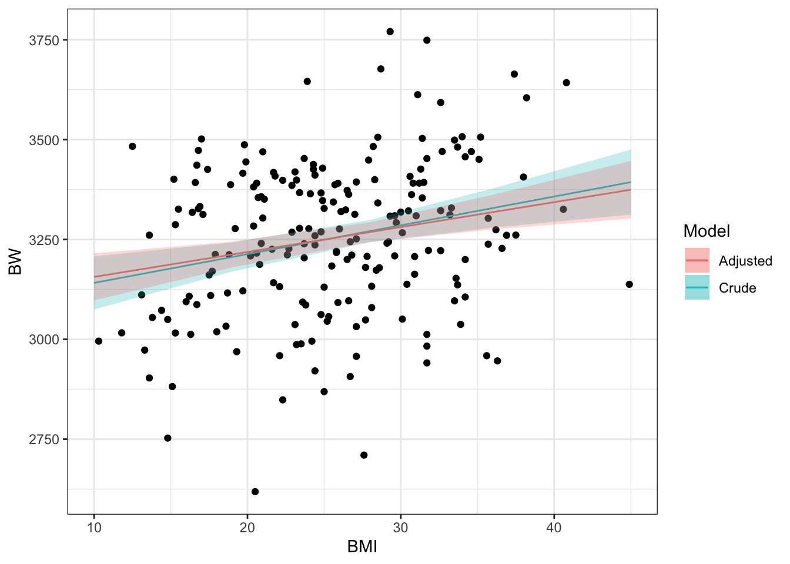

Intoduction to Statistical Tests
This training module was developed by Alexis Payton, Kyle Roell, Elise Hickman, and Julia E. Rager.
All input files (script, data, and figures) can be downloaded from the UNC-SRP TAME2 GitHub website.
Introduction to Training Module
This training module provides a brief introduction to some of the most commonly implemented statistics and associated visualizations used in exposure science, toxicology, and environmental health studies. This module first uploads an example dataset that is similar to the data used in TAME 2.0 Module 2.3 Data Manipulation & Reshaping], though it includes some expanded subject information data to allow for more example statistical tests. Then, methods to evaluate data normality are presented, including visualization-based and statistical-based approaches.
Basic statistical tests discussed in this module include:
- T test
- Analysis of Variance (ANOVA) with a Tukey’s Post-Hoc test
- Regression Modeling (Linear and Logistic)
- Chi-squared test
- Fisher’s exact test
These statistical tests are very simple, with more extensive examples and associated descriptions of statistical models in the proceeding applications-based training modules in:
- TAME 2.0 Module 4.4 Two-Group Comparisons & Visualizations
- TAME 2.0 Module 4.5 Multi-Group Comparisons & Visualizations
- TAME 2.0 Module 4.6 Advanced Multi-Group Comparisons & Visualizations
Script Preparations
Installing required R packages
If you already have these packages installed, you can skip this step, or you can run the below code which checks installation status for you
if (!requireNamespace("tidyverse"))
install.packages("tidyverse");
if (!requireNamespace("car"))
install.packages("car");
if (!requireNamespace("ggpubr"))
install.packages("ggpubr");
if(!requireNamespace("effects"))
install.packages("effects");Loading R packages required for this session
library(tidyverse) # all tidyverse packages, including dplyr and ggplot2
library(car) # package for statistical tests
library(ggpubr) # ggplot2 based plots
library(effects) # for linear modelingImporting example datasets
Let’s read in our example dataset. Note that these data are similar to those used previously, except that demographic and chemical measurement data were previously merged, and a few additional columns of subject information/demographics were added to serve as more thorough examples of data for use in this training module.
# Loading data
full.data <- read.csv("Module3_4_Input/Module3_4_InputData.csv")Let’s view the top of the first 9 columns of data in this dataframe:
full.data[1:10,1:9]## ID BMI BMIcat MAge MEdu BW GA Smoker Smoker3
## 1 1 27.7 Overweight 22.99928 College_Degree 3180.058 34 NS Never
## 2 2 26.8 Overweight 30.05142 College_Degree 3210.823 43 S Never
## 3 3 33.2 Overweight 28.04660 College_Degree 3311.551 40 NS Never
## 4 4 30.1 Overweight 34.81796 College_Degree 3266.844 32 S Never
## 5 5 37.4 Overweight 42.68440 College_Degree 3664.088 35 NS Never
## 6 6 33.3 Overweight 24.94960 College_Degree 3328.988 40 NS Never
## 7 7 24.8 Overweight 29.54798 College_Degree 3061.949 30 NS Never
## 8 8 16.9 Underweight 24.94954 College_Degree 3332.539 38 NS Current
## 9 9 36.9 Overweight 33.58589 College_Degree 3260.482 39 NS Never
## 10 10 21.7 Normal 39.29018 College_Degree 3141.723 35 NS CurrentThese represent the subject information/demographic data, which include the following columns:
ID: subject numberBMI: body mass indexBMIcat: BMI <= 18.5 binned as “Underweight”, 18.5 < BMI <= 24.5 binned as “Normal”, BMI > 24.5 binned as “Overweight”MAge: maternal age in yearsMEdu: maternal education level; “No_HS_Degree” = “less than high school”, “No_College_Degree” = “high school or some college”, “College_Degree” = “college or greater”BW: body weight in gramsGA: gestational age in weeksSmoker: “NS” = non-smoker, “S” = smokerSmoker3: “Never”, “Former”, or “Current” smoking status
Let’s now view the remaining columns (columns 10-15) in this dataframe:
full.data[1:10,10:15]## DWAs DWCd DWCr UAs UCd UCr
## 1 6.426464 1.292941 51.67987 10.192695 0.7537104 42.60187
## 2 7.832384 1.798535 50.10409 11.815088 0.9789506 41.30757
## 3 7.516569 1.288461 48.74001 10.079057 0.1903262 36.47716
## 4 5.906656 2.075259 50.92745 8.719123 0.9364825 42.47987
## 5 7.181873 2.762643 55.16882 9.436559 1.4977829 47.78528
## 6 9.723429 3.054057 51.14812 11.589403 1.6645837 38.26386
## 7 6.268547 1.218410 52.08578 8.887948 0.6347667 39.45535
## 8 6.718448 1.414975 54.96740 9.304968 0.6658849 45.09987
## 9 9.074928 2.727755 55.72826 10.818153 1.6585757 42.58577
## 10 5.771691 2.410993 47.06552 8.747217 1.7354305 34.80661These columns represent the environmental exposure measures, including:
DWAs: drinking water arsenic levels in µg/LDWCd: drinking water cadmium levels in µg/LDWCr: drinking water chromium levels in µg/LUAs: urinary arsenic levels in µg/LUCd: urinary cadmium levels in µg/LUCr: urinary chromium levels in µg/L
Now that the script is prepared and the data are uploaded, we can start by asking some initial questions about the data that can be answered by running some basic statistical tests and visualizations.
Training Module’s Environmental Health Questions
This training module was specifically developed to answer the following environmental health questions:
- Are there statistically significant differences in BMI between non-smokers and smokers?
- Are there statistically significant differences in BMI between current, former, and never smokers?
- Is there a relationship between maternal BMI and birth weight?
- Are maternal age and gestational age considered potential covariates in the relationship between maternal BMI and birth weight?
- Are there statistically significant differences in gestational age based on whether a subject is a non-smoker or a smoker?
- Is there a relationship between smoking status and BMI?
Assessing Normality & Homogeneity of Variance
Statistical test selection often relies upon whether or not the underlying data are normally distributed and that variance across the groups is the same (homogeneity of variances). Many statistical tests and methods that are commonly implemented in exposure science, toxicology, and environmental health research rely on assumptions of normality. Thus, one of the most common statistical tests to perform at the beginning of an analysis is a test for normality.
As discussed in the previous module, there are a few ways to evaluate the normality of a dataset:
First, you can visually gauge whether a dataset appears to be normally distributed through plots. For example, plotting data using histograms, densities, or Q-Q plots can graphically help inform if a variable’s values appear to be normally distributed or not.
Second, you can evaluate normality using statistical tests, such as the Kolmogorov-Smirnov (K-S) test and Shapiro-Wilk test. When using these tests and interpreting their results, it is important to remember that the null hypothesis is that the sample distribution is normal, and a significant p-value means the distribution is non-normal.
Let’s start with the first approach based on data visualizations. In this module, we’ll primarily be generating figures using the ggubr package which is specifically designed to generate ggplot2-based figures using more streamlined coding syntax. In addition, this package has statistical parameters for plotting that are useful for basic statistical analysis, especially for people with introductory experience to plotting in R. For further documentation on ggubr, click here.
Let’s begin with a histogram to view the distribution of BMI data using the gghistogram() function from the ggubr package:
gghistogram(data = full.data, x = "BMI", bins = 20)
Let’s also view the Q–Q (quantile-quantile) plot using the ggqqplot() function also from the ggubr package:
ggqqplot(full.data$BMI, ylab = "BMI")
From these visualizations, the BMI variable appears to be normally distributed, with data centered in the middle and spreading with a distribution on both the lower and upper sides that follow typical normal data distributions.
Let’s now implement the second approach based on statistical tests for normality. Here, let’s use the Shapiro-Wilk test as an example, again looking at the BMI data.
shapiro.test(full.data$BMI)##
## Shapiro-Wilk normality test
##
## data: full.data$BMI
## W = 0.99232, p-value = 0.3773This test resulted in a p-value of 0.3773, so we cannot reject the null hypothesis (that the BMI data are normally distributed). These findings support the assumption that these data are normally distributed.
Next, we’ll assess homogeneity of variance using the Levene’s test. This will be done using the leveneTest()function from the car package:
# First convert the smoker variable to a factor
full.data$Smoker = factor(full.data$Smoker, levels = c("NS", "S"))
leveneTest(BMI ~ Smoker, data = full.data)## Levene's Test for Homogeneity of Variance (center = median)
## Df F value Pr(>F)
## group 1 0.2631 0.6086
## 198The p value, (Pr>F), is 0.6086 indicating that variance in BMI across the smoking groups is the same. Therefore, the assumptions of a t-test, including normality and homogeneity of variance, have been met.
Two-Group Visualizations and Statistical Comparisons using the T-Test
T-tests are commonly used to test for a significant difference between the means of two groups in normally distributed data. In this example, we will be answering Environmental Health Question 1: Are there statistically significant differences in BMI between non-smokers and smokers?
We will specifically implement a two sample t-test (or independent samples t-test).
Let’s first visualize the BMI data across these two groups using boxplots:
ggboxplot(data = full.data, x = "Smoker", y = "BMI")
From this plot, it looks like non-smokers (labeled “NS”) may have significantly higher BMI than smokers (labeled “S”), though we need statistical evaluation of these data to more thoroughly evaluate this potential data trend.
It is easy to perform a t-test on these data using the t.test() function from the base R stats package:
t.test(data = full.data, BMI ~ Smoker)##
## Welch Two Sample t-test
##
## data: BMI by Smoker
## t = 2.5372, df = 80.362, p-value = 0.01311
## alternative hypothesis: true difference in means between group NS and group S is not equal to 0
## 95 percent confidence interval:
## 0.583061 4.823447
## sample estimates:
## mean in group NS mean in group S
## 26.11176 23.40851Answer to Environmental Health Question 1
With this, we can answer Environmental Health Question #1: Are there statistically significant differences in BMI between non-smokers and smokers?
Answer: From this statistical output, we can see that the overall mean BMI in non-smokers (group “NS”) is 26.1, and the overall mean BMI in smokers (group “S”) is 23.4. We can also see that the resulting p-value comparison between the means of these two groups is, indeed, significant (p-value = 0.013), meaning that the means between these groups are significantly different (i.e., are not equal).
It’s also helpful to save these results into a variable within the R global environment, which then allows us to access specific output values and extract them more easily for our records. For example, we can run the following to specifically extract the resulting p-value from this test:
ttest.res <- t.test(data = full.data, BMI ~ Smoker) # making a list in the R global environment with the statistical results
signif(ttest.res$p.value, 2) # pulling the p-value and using the `signif` function to round to 2 significant figures## [1] 0.013Three-Group Visualizations and Statistical Comparisons using an ANOVA
Analysis of Variance (ANOVA) is a statistical method that can be used to compare means across three or more groups in normally distributed data. To demonstrate an ANOVA test on this dataset, let’s answer Environmental Health Question 2: Are there statistically significant differences in BMI between current, former, and never smokers? To do this we’ll use the Smoker3 variable from our dataset.
Let’s again start by viewing these data distributions using a boxplot:
ggboxplot(data = full.data, x = "Smoker3", y = "BMI")
From this cursory review of the data, it looks like the current smokers likely demonstrate significantly different BMI measures than the former and never smokers, though we need statistical tests to verify this potential trend. We also require statistical tests to evaluate potential differences (or lack of differences) between former and never smokers.
Let’s now run the ANOVA to compare BMI between smoking groups, using the aov() function to fit an ANOVA model:
smoker_anova = aov(data = full.data, BMI ~ Smoker3)
smoker_anova## Call:
## aov(formula = BMI ~ Smoker3, data = full.data)
##
## Terms:
## Smoker3 Residuals
## Sum of Squares 2046.713 6817.786
## Deg. of Freedom 2 197
##
## Residual standard error: 5.882861
## Estimated effects may be unbalancedWe need to extract the typical ANOVA results table using either the summary() or anova() function on the resulting fitted object:
anova(smoker_anova)## Analysis of Variance Table
##
## Response: BMI
## Df Sum Sq Mean Sq F value Pr(>F)
## Smoker3 2 2046.7 1023.36 29.57 5.888e-12 ***
## Residuals 197 6817.8 34.61
## ---
## Signif. codes: 0 '***' 0.001 '**' 0.01 '*' 0.05 '.' 0.1 ' ' 1This table outputs a lot of information, including the F value referring to the resulting F-statistic, Pr(>F) referring to the p-value of the F-statistic, and other values that are described in detail through other available resources including this helpful video through PennState’s statistics online resources.
Answer to Environmental Health Question 2
With this, we can answer Environmental Health Question #2: Are there statistically significant differences in BMI between current, former, never smokers?
Answer: From this ANOVA output table, we can conclude that the group means across all three groups are not equal given that the p value, written as Pr(>F) is significant (p value = 5.88 x 10-12). However, it doesn’t tell us which groups differ from each other and that’s where post hoc tests like Tukey’s are useful.
Let’s run a Tukey’s post hoc test using the TukeyHSD() function in base R to determine which of the current, former, and never smokers have significant differences in BMI:
smoker_tukey = TukeyHSD(smoker_anova)
smoker_tukey## Tukey multiple comparisons of means
## 95% family-wise confidence level
##
## Fit: aov(formula = BMI ~ Smoker3, data = full.data)
##
## $Smoker3
## diff lwr upr p adj
## Former-Current 7.4436765 4.203006 10.684347 0.0000005
## Never-Current 8.1167857 5.595470 10.638102 0.0000000
## Never-Former 0.6731092 -2.011764 3.357982 0.8245448Although the above Tukey object contains a column p adj, those are the raw unadjusted p values. It is common practice to adjust p values from multiple comparisons to prevent the reporting of false positives or reporting of a significant difference that doesn’t actually exist (Feise, 2002). There are a couple of different methods that are used to adjust p values including the Bonferroni and the Benjamini & Hochberg approaches.
For this example, we’ll use the p.adjust() function to obtain the Benjamini & Hochberg adjusted p values. Check out the associated RDocumentation to discover other methods that can be used to adjust p values using the p.adjust() function:
# First converting the Tukey object into a dataframe
smoker_tukey_df = data.frame(smoker_tukey$Smoker3) %>%
# renaming the `p adj` to `P Value` for clarity
rename(`P Value` = p.adj)
# Adding a column with the adjusted p values
smoker_tukey_df$`P Adj` = p.adjust(smoker_tukey_df$`P Value`, method = "fdr")
smoker_tukey_df## diff lwr upr P Value P Adj
## Former-Current 7.4436765 4.203006 10.684347 5.064863e-07 7.597295e-07
## Never-Current 8.1167857 5.595470 10.638102 3.432921e-12 1.029876e-11
## Never-Former 0.6731092 -2.011764 3.357982 8.245448e-01 8.245448e-01Answer to Environmental Health Question 2
We can use this additional information to further answer Environmental Health Question #2: Are there statistically significant differences in BMI between current, former, and never smokers?
Answer: Current smokers have significantly lower BMIs than people who have never smoked and people who have formerly smoked. This is made evident by the 95% confidence intervals (lwr and upr) that don’t cross 0 and the p values that are less than 0.05 even after adjusting.
Regression Modeling and Visualization: Linear and Logistic Regressions
Regression modeling aims to find a relationship between a dependent variable (or outcome, response, y) and an independent variable (or predictor, explanatory variable, x). There are many forms of regression analysis, but here we will focus on two: linear regression and logistic regression.
In brief, linear regression is generally used when you have a continuous dependent variable and there is assumed to be some sort of linear relationship between the dependent and independent variables. Conversely, logistic regression is often used when the dependent variable is dichotomous.
Let’s first run through an example linear regression model to answer Environmental Health Question 3: Is there a relationship between maternal BMI and birth weight?
Linear Regression
We will first visualize the data and a run simple correlation analysis to evaluate whether these data are generally correlated. Then, we will run a linear regression to evaluate the relationship between these variables in more detail.
Plotting the variables against one another and adding a linear regression line using the function ggscatter() from the ggubr package:
ggscatter(full.data, x = "BMI", y = "BW",
# Adding a linear line with 95% condfidence intervals as the shaded region
add = "reg.line", conf.int = TRUE,
# Customize reg. line
add.params = list(color = "blue", fill = "lightgray"),
# Adding Pearson's correlation coefficient
cor.coef = TRUE, cor.method = "pearson", cor.coeff.args = list(label.sep = "\n")) 
We can also run a basic correlation analysis between these two variables using the cor.test() function. This function uses the Pearson’s correlation test as default, which we can implement here due to the previously discussed assumption of normality for this dataset. Note that other tests are needed in instances when data are not normally distributed (e.g., Spearman Rank). This function is used here to extract the Pearson’s correlation coefficient and p-value (which also appear above in the upper left corner of the graph):
cor.res <- cor.test(full.data$BW, full.data$BMI)
signif(cor.res$estimate, 2)## cor
## 0.25signif(cor.res$p.value, 2)## [1] 0.00039Together, it looks like there may be an association between BW and BMI, based on these correlation results, demonstrating a significant p-value of 0.0004.
To test this further, let’s run a linear regression analysis using the lm() function, using BMI (X) as the independent variable and BW as the dependent variable (Y):
crude_lm <- lm(data = full.data, BW ~ BMI)
summary(crude_lm) # viewing the results summary##
## Call:
## lm(formula = BW ~ BMI, data = full.data)
##
## Residuals:
## Min 1Q Median 3Q Max
## -598.39 -116.72 8.11 136.54 490.11
##
## Coefficients:
## Estimate Std. Error t value Pr(>|t|)
## (Intercept) 3069.201 52.576 58.38 < 2e-16 ***
## BMI 7.208 1.997 3.61 0.000388 ***
## ---
## Signif. codes: 0 '***' 0.001 '**' 0.01 '*' 0.05 '.' 0.1 ' ' 1
##
## Residual standard error: 188 on 198 degrees of freedom
## Multiple R-squared: 0.06176, Adjusted R-squared: 0.05702
## F-statistic: 13.03 on 1 and 198 DF, p-value: 0.0003876Answer to Environmental Health Question 3
With this, we can answer Environmental Health Question #3: Is there a relationship between maternal BMI and birth weight?
Answer: Not only is there a slight positive correlation between maternal BMI and BW as indicated by ~0.25 correlation coefficient, this linear relationship is significant due to the p-value being ~0.0004.
Additionally, we can derive confidence intervals for the BMI estimate using:
confint(crude_lm)["BMI",]## 2.5 % 97.5 %
## 3.270873 11.145740Notice that the r-squared (R2) value in regression output is the squared value of the previously calculated correlation coefficient (R).
signif(sqrt(summary(crude_lm)$r.squared), 2)## [1] 0.25In epidemiological studies, the potential influence of confounders is considered by including important covariates within the final regression model. Let’s go ahead and investigate Environmental Health Question 4: Are maternal age and gestational age considered potential covariates in the relationship between maternal BMI and birth weight? We can do that by adding those variables to the linear model.
adjusted_lm = lm(data = full.data, BW ~ BMI + MAge + GA)
summary(adjusted_lm)##
## Call:
## lm(formula = BW ~ BMI + MAge + GA, data = full.data)
##
## Residuals:
## Min 1Q Median 3Q Max
## -454.04 -111.24 5.79 116.46 488.41
##
## Coefficients:
## Estimate Std. Error t value Pr(>|t|)
## (Intercept) 2247.995 117.946 19.060 < 2e-16 ***
## BMI 6.237 1.774 3.515 0.000547 ***
## MAge 4.269 1.887 2.263 0.024752 *
## GA 19.612 2.656 7.385 4.28e-12 ***
## ---
## Signif. codes: 0 '***' 0.001 '**' 0.01 '*' 0.05 '.' 0.1 ' ' 1
##
## Residual standard error: 165.5 on 196 degrees of freedom
## Multiple R-squared: 0.2805, Adjusted R-squared: 0.2695
## F-statistic: 25.47 on 3 and 196 DF, p-value: 5.884e-14Let’s further visualize these regression modeling results by adding a regression line to the original scatterplot. Before doing so, we’ll use the effect() function from the effects package to make estimated predictions of birth weight values for the crude and adjusted linear models. The crude model only has BMI as the dependent variable, while the adjusted model includes BMI, maternal age, and gestational age as dependent variables. This function creates a table that contains 5 columns: fitted values for BMI (BMI), predictor values (fit), standard errors of the predictions (se), lower confidence limits (lower), and upper confidence limits (upper). An additional column, Model, was added to specify whether the values correspond to the crude or adjusted model.
For additional information on visualizing adjusted linear models, see Plotting Adjusted Associations in R.
crude_lm_predtable = data.frame(effect(term = "BMI", mod = crude_lm), Model = "Crude")
adjusted_lm_predtable = data.frame(effect(term = "BMI", mod = adjusted_lm), Model = "Adjusted")
# Viewing one of the tables
crude_lm_predtable## BMI fit se lower upper Model
## 1 10 3141.284 33.63898 3074.948 3207.621 Crude
## 2 19 3206.159 18.54497 3169.588 3242.730 Crude
## 3 28 3271.034 14.21563 3243.000 3299.067 Crude
## 4 36 3328.700 24.86346 3279.669 3377.732 Crude
## 5 45 3393.575 41.18575 3312.356 3474.794 CrudeNow we can plot each linear model and their corresponding 95% confidence intervals (CI). It’s easier to visualize this using ggplot2 instead of ggubr so that’s what we’ll use:
options(repr.plot.width=9, repr.plot.height=6) # changing dimensions of the entire figure
ggplot(full.data, aes(x = BMI, y = BW)) +
geom_point() +
# Crude line
geom_line(data = crude_lm_predtable, mapping = aes(x = BMI, y = fit, color = Model)) +
# Adjusted line
geom_line(data = adjusted_lm_predtable, mapping = aes(x = BMI, y = fit, color = Model)) +
# Crude 95% CI
geom_ribbon(data = crude_lm_predtable, mapping = aes(x = BMI, y = fit, ymin = lower, ymax = upper, fill = Model), alpha = 0.25) +
# Adjusted 95% CI
geom_ribbon(data = adjusted_lm_predtable, mapping = aes(x = BMI, y = fit, ymin = lower, ymax = upper, fill = Model), alpha = 0.25)
Answer to Environmental Health Question 4
With this, we can answer Environmental Health Question #4: Are maternal age and gestational age considered potential covariates in the relationship between maternal BMI and birth weight?
Answer: BMI is still significantly associated with BW and the included covariates are also shown to be significantly related to birth weight in this model. However, the addition of gestational age and maternal age did not have much of an impact on modifying the relationship between BMI and birth weight.
Logistic Regression
To carry out a logistic regression, we need to evaluate one continuous variable (here, we select gestational age, using the GA variable) and one dichotomous variable (here, we select smoking status, using the Smoker variable) to evaluate Environmental Health Question 5: Are there statistically significant differences in gestational age based on whether a subject is a non-smoker or a smoker?
Because smoking status is a dichotomous variable, we will use logistic regression to look at this relationship. Let’s first visualize these data using a stacked bar plot for the dichotomous smoker dataset:
ggboxplot(data = full.data, x = "Smoker", y = "GA")
With this visualization, it’s difficult to tell whether or not there are significant differences in maternal education based on smoking status.
Let’s now run the statistical analysis, using logistic regression modeling:
# Before running the model, "Smoker", needs to be binarized to 0's or 1's for the glm function
glm_data = full.data %>%
mutate(Smoker = ifelse(Smoker == "NS", 0,1))
# Use GLM (generalized linear model) and specify the family as binomial
# This tells GLM to run a logistic regression
log.res = glm(Smoker ~ GA, family = "binomial", data = glm_data)
summary(log.res) # viewing the results##
## Call:
## glm(formula = Smoker ~ GA, family = "binomial", data = glm_data)
##
## Coefficients:
## Estimate Std. Error z value Pr(>|z|)
## (Intercept) 1.26669 1.37042 0.924 0.3553
## GA -0.06764 0.03796 -1.782 0.0747 .
## ---
## Signif. codes: 0 '***' 0.001 '**' 0.01 '*' 0.05 '.' 0.1 ' ' 1
##
## (Dispersion parameter for binomial family taken to be 1)
##
## Null deviance: 218.10 on 199 degrees of freedom
## Residual deviance: 214.89 on 198 degrees of freedom
## AIC: 218.89
##
## Number of Fisher Scoring iterations: 4Similar to the regression modeling analysis, we can also derive confidence intervals:
confint(log.res)["GA",]## Waiting for profiling to be done...## 2.5 % 97.5 %
## -0.14301103 0.00640128Answer to Environmental Health Question 5
With this, we can answer Environmental Health Question #5: Are there statistically significant differences in maternal education level based on whether they are a non-smoker or a smoker?
Answer: Collectively, these results show a non-significant p-value relating gestational age to smoking status. The confidence intervals also overlap across zero. Therefore, these data do not demonstrate a significant association between gestational age and smoking status.
Statistical Evaluations of Categorical Data using the Chi-Squared Test and Fisher’s Exact Test
Chi-squared test and Fisher’s exact tests are used primarily when evaluating data distributions between two categorical variables. The difference between a Chi-squared test and the Fisher’s exact test surrounds the specific procedure being run. The Chi-squared test is an approximation and is run with larger sample sizes to determine whether there is a statistically significant difference between the expected vs. observed frequencies in one or more categories of a contingency table. The Fisher’s exact test is similar, though is an exact measure that can be run on any sample size, including smaller sample sizes.
The number of samples or subjects (n) considered to be sufficiently large enough is subjective, contingent upon the research question being asked, and the experimental design. However, smaller sample sizes can be more permissible if the sample is normally distributed, but generally speaking having n > 30 is a common convention in statistics (Alexander, 2022).
For this example, we are interested in evaluating the potential relationship between two categorical variables: smoking status (using the Smoker variable) and categorical BMI group (using the BMIcat variable) to address Environmental Health Question 6: Is there a relationship between smoking status and BMI?
To run these categorical statistical tests, let’s first create and view a 2-way contingency table describing the frequencies of observations across the categorical BMI and smoking groups:
ContingencyTable <- with(full.data, table(BMIcat, Smoker))
ContingencyTable## Smoker
## BMIcat NS S
## Normal 43 14
## Overweight 87 22
## Underweight 23 11Now let’s run the Chi-squared test on this table:
chisq.test(ContingencyTable)##
## Pearson's Chi-squared test
##
## data: ContingencyTable
## X-squared = 2.1849, df = 2, p-value = 0.3354Note that we can also run the Chi-squared test using the following code, without having to generate the contingency table:
chisq.test(full.data$BMIcat, full.data$Smoker)##
## Pearson's Chi-squared test
##
## data: full.data$BMIcat and full.data$Smoker
## X-squared = 2.1849, df = 2, p-value = 0.3354Or:
with(full.data, chisq.test(BMIcat, Smoker))##
## Pearson's Chi-squared test
##
## data: BMIcat and Smoker
## X-squared = 2.1849, df = 2, p-value = 0.3354Answer to Environmental Health Question 6
Note that these all produce the same results. With this, we can answer Environmental Health Question #6: Is there a relationship between smoking status and BMI?
Answer: This results in a p-value = 0.34, demonstrating that there is no significant relationship between BMI categories and smoking status.
We can also run a Fisher’s Exact Test when considering sample sizes. We won’t run this here due to computing time, but here is some example code for your records:
#With small sample sizes, can use Fisher's Exact Test
#fisher.test(full.data$BMI, full.data$Smoker)Concluding Remarks
In conclusion, this training module serves as a high-level introduction to basic statistics and visualization methods. Statistical approaches described in this training module include tests for normality, t-test, analysis of variance, regression modeling, chi-squared test, and Fisher’s exact test. Visualization approaches include boxplots, histograms, scatterplots, and regression lines. These methods serve as an important foundation for nearly all studies carried out in environmental health research.
- If we’re interested in investigating if there are significant differences in birth weight based on maternal education level, which statistical test should you use?
- Is that relationship considered to be statistically significant and how can we visualize the distributions of these groups?